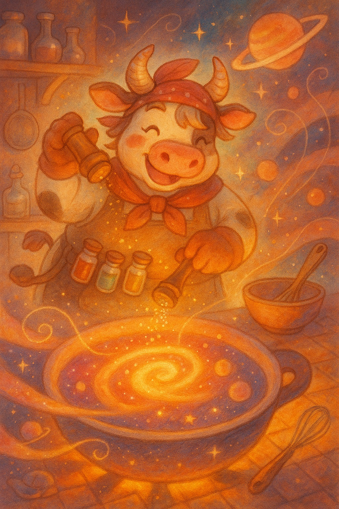
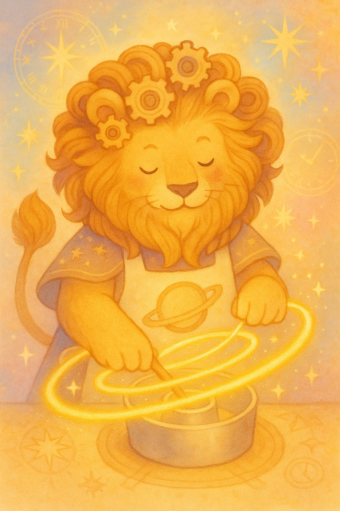
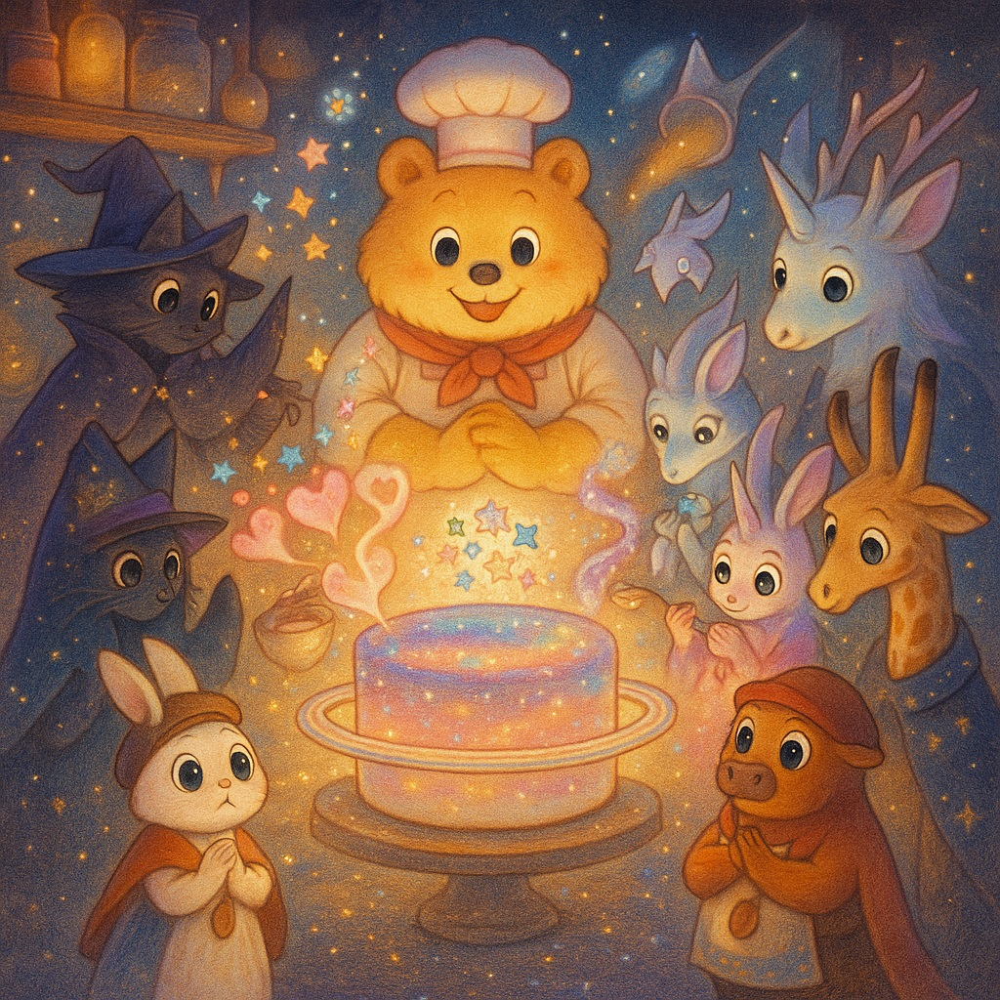

たまごから うまれた、ひかりの たねを
そっと てのひらに のせて——
リオと ミナは、あたらしい キッチンへ
てくてく あるいて いきました。
「このたね、あたためてみようか」
ミナが そっと こえをかけると、リオが うなずきます。
ふたりが たねを てのひらで つつみこみ、
「いのちのレシピ、めしあがれ」って ささやいた そのとき——
The Egg of Light and the New Cosmic Kitchen: A glowing cosmic egg floating in the center, gently illuminating the curious giraffe Rio (wearing a cape with star patterns) and the thoughtful rabbit Mina (wearing an apron with embroidered flowers). The background is a dreamy, misty nebula kitchen, full of light particles and soft fog. Magical atmosphere, full of wonder and a sense of beginning. Use pastel tones with a morning light palette, and a picture book style with warm, soft curves.
ポッ…と たねが あたたかくなって、
パッと まぶしい ひかりが ひろがりました。
もわん、と ひかりの なかから、
まっしろな コックぼうを かぶった
太陽のくまさんパティシエが あらわれたのです！
「ようこそ、新しいキッチンへ！」
やさしいこえで くまさんが ほほえみます。
パッ！ ひかりがひらくと: Rio and Mina walk through a swirling cloud of colorful cosmic dust, like ingredients in a floating soup. Red, orange, and yellow particles shimmer around them. Mina touches her spoon-shaped pendant, while Rio looks up in awe. Use pastel tones with a morning light palette, and a picture book style with warm, soft curves.
その おなかは、ぽかぽかと あたたかくて、
まるで オーブンの たいようみたい。
「ここからは、“いのちのケーキ”の
ざいりょうを あつめるんだよ」
くまさんが いうと、まわりの チリたちが
ふわふわ、くるくる、とけあいはじめました。
ケーキの ざいりょうは 惑星たち: A swirling vortex of gas and dust begins to form small planets. Rio and Mina watch with sparkling eyes. The scene shows dynamic movement and colorful trails of matter spiraling inward. Use pastel tones with a morning light palette, and a picture book style with warm, soft curves.
ちいさな かたまり、
おおきな かたまり、
なが〜いのや、まあるいの。
それが――
そう！ **惑星（わくせい）**です！
うまれたのは——惑星！: Mercury - Mercuria the squirrel dashes across the scene, tossing candy stars like confetti. She has silver fur, wears a sleek racing apron, and leaves a trail of sparkle. The background is metallic and bright, near the warmth of the cosmic oven. Use pastel tones with a morning light palette, and a picture book style with warm, soft curves.
くるくる すばしっこい リスの マーキュリア（水星）は——
**「コンペイトウ」**を まく おしごと。
シャリッ、パリッと、リズムをつけるよ！
マーキュリア：コンペイトウまき: Mercuria the squirrel dashes across the scene, tossing candy stars like confetti. She has silver fur, wears a sleek racing apron, and leaves a trail of sparkle. The background is metallic and bright, near the warmth of the cosmic oven. Use pastel tones with a morning light palette, and a picture book style with warm, soft curves.
ぽかぽか あったかい モルモットの ヴィーナ（金星）は——
**「とろ〜り クリーム」**を とどけます。
あまくて すっぱくて、ちょっぴり あつい あじ！
ヴィーナ：とろ〜り クリーム: Veena the guinea pig carefully pours cream into a celestial bowl. Her fur is fluffy, and she wears a ribboned dress with lace. Sweet scents waft through the air in swirling patterns. Use pastel tones with a morning light palette, and a picture book style with warm, soft curves.
まっ赤で つよい ウマの マールズ（火星）は——
**「シナモンパウダー」**を パッパッ！
じょうねついっぱい、いい におい！

マールズ：シナモンの香り: Marls the cow shakes bold spices into the mix with confidence. She has red patches, paprika-colored horns, and a spice belt. Her stance is energetic and expressive. Use pastel tones with a morning light palette, and a picture book style with warm, soft curves.
おおきな ゾウの ジュピット（木星）は——
**「ふわふわ わたがし」**で ケーキの したじき！
ジュピット：ケーキの土台: Jupit the elephant gently kneads cotton candy dough. He is large and gentle, with cloudy ears and a storm-patterned apron. Soft clouds and cozy swirls fill the background. Use pastel tones with a morning light palette, and a picture book style with warm, soft curves.
たてがみじまんの ライオンの サターノ（土星）は——
**「まあるい ケーキの かた」**を くるくる リングで！

サターノ：ケーキの土台: Satano the lion spins golden rings around a cake mold. His mane resembles clock gears, and he wears a ring-shaped apron. The background features symmetrical star patterns and time motifs. Use pastel tones with a morning light palette, and a picture book style with warm, soft curves.
ふしぎな プリンス（天王星）は——
**「ひんやり ミントの かざり」**を そっと のせます。
ゆめのように うつくしい プリンセス（海王星）は——
**「キラキラ シロップ」**を ポタポタ。
プリンスとプリンセス：かざりと ひかり: The icy Prince (Uranus) and the shimmering Princess (Neptune) gently add mint leaves and crystal syrup. The Prince wears a cape made of frost, and the Princess a silvery gown. Snowflake sparkles float around them. Use pastel tones with a morning light palette, and a picture book style with warm, soft curves.
いちばん とおくにいる 魔女の まお（冥王星）は——
**「ひみつの キラリ」**を そっと ふりかけます。
ちいさくても、とびきり たいせつな スパイス！
魔女のまお：ひみつのキラリ: Mao the witch adds a pinch of shimmering stardust from a tiny spoon. She wears a deep-sea hat and a stardust apron. Mysterious light glows softly in the dark, quiet edge of the cosmos. Use pastel tones with a morning light palette, and a picture book style with warm, soft curves.
リオと ミナは、どの 惑星からも
すてきな ざいりょうを うけとって、
ケーキづくりの ひみつを たくさん ききました。
「いのちのケーキ、ざいりょうが どんどん そろってきたよ！」
さあ、つぎは——
この ざいりょうで、どんなケーキが できあがるのかな？

いのちのケーキ、そろった！: All the ingredients now gather in a glowing swirl, forming the base of a beautiful Earth cake. The Sun Bear Chef smiles proudly. Rio and Mina stand in awe, surrounded by all the planetary friends. Use pastel tones with a morning light palette, and a picture book style with warm, soft curves.